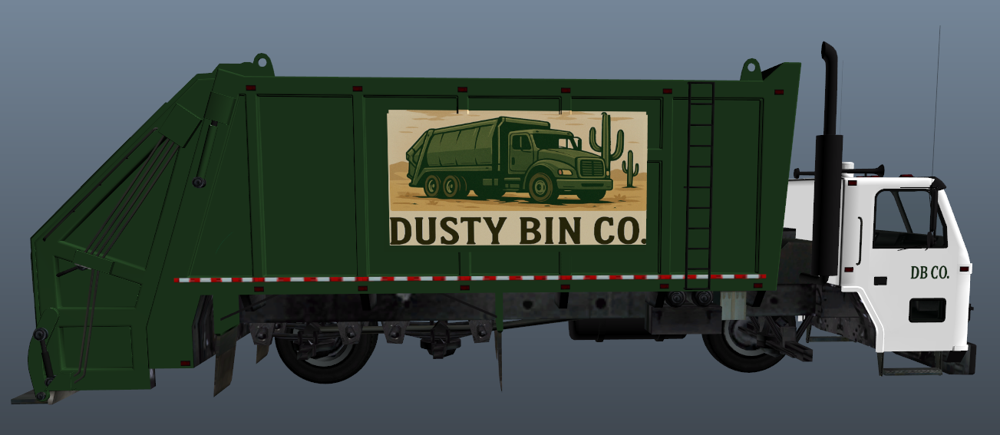
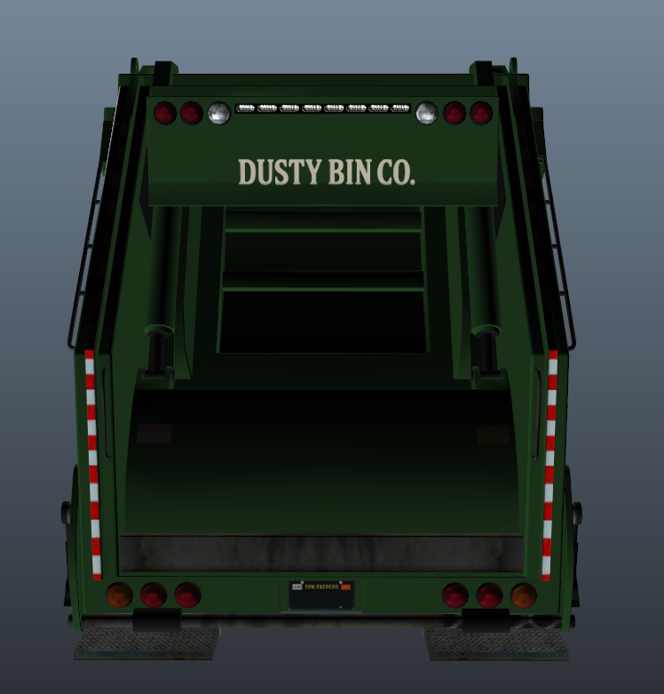
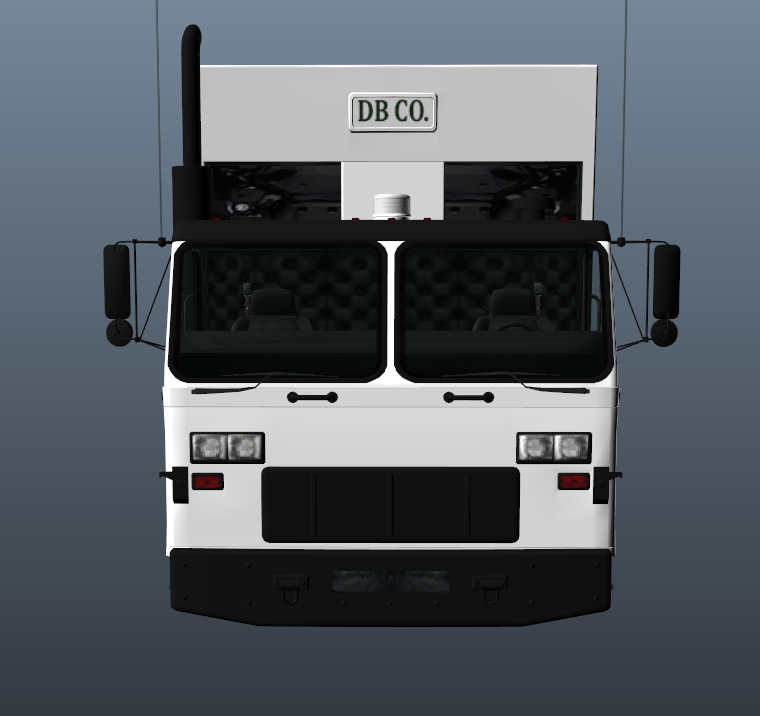
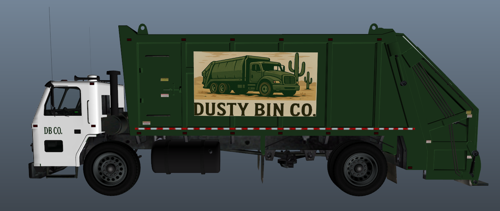

Nasza flota
Nie potrzebujemy setek pojazdów. Wystarczy jeden, ale za to pancerny. Poznaj naszą śmieciarkę!




DustMaster 3000
Nasza niezawodna śmieciarka to serce operacji Dusty Bin Co. Pojazd przystosowany do najtrudniejszych warunków pustynnych, wyposażony w system automatycznego załadunku i kompresji odpadów. Codziennie przemierza zakurzone drogi Sandy Shores, gotowa na wszystko.